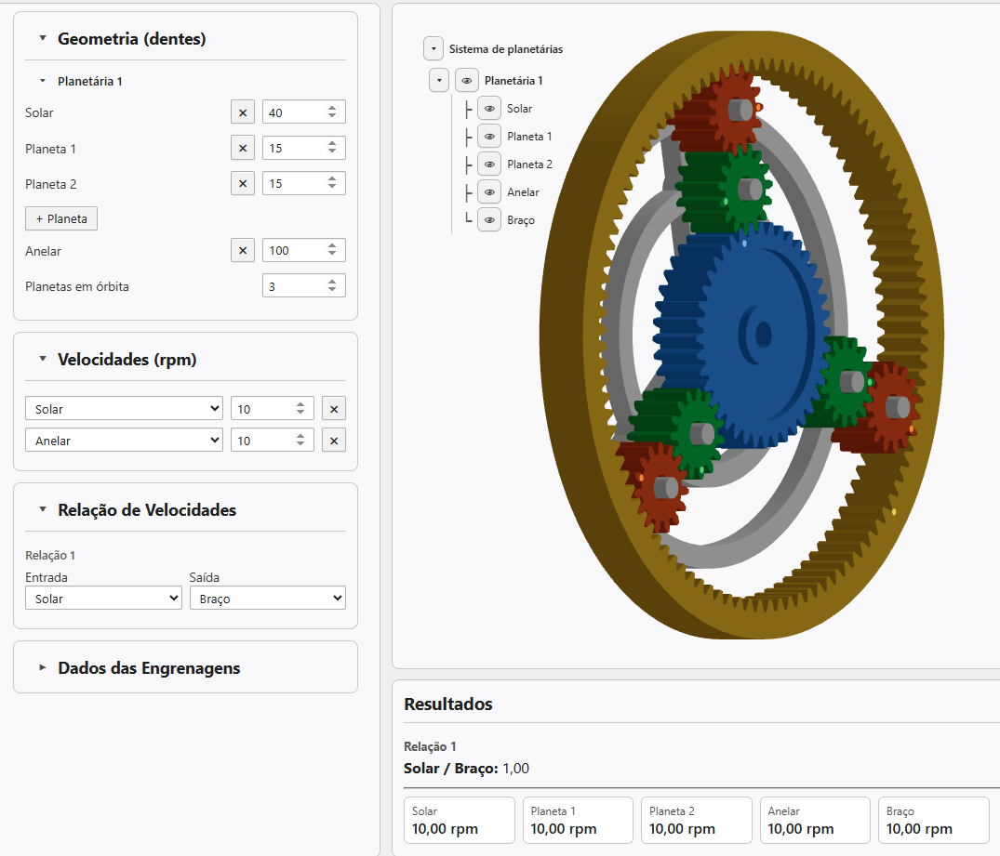
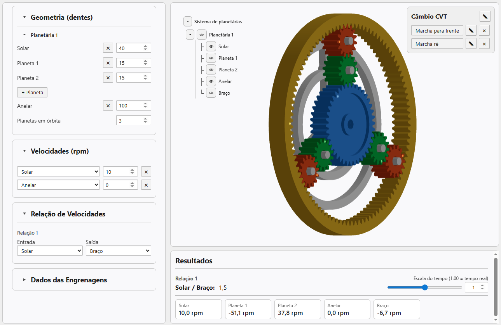

Este artigo mostra como montar, no Engrenarium, um mecanismo de funcionamento de uma transmissão CVT usando um conjunto planetário de um estágio. O exemplo demonstra duas condições: marcha para frente e marcha ré.
Dados de montagem
Abra um novo projeto no Engrenarium. No painel de parâmetros, adicione mais uma engrenagem planeta e configure a geometria do conjunto com os seguintes números de dentes:
| Elemento | Número de dentes |
|---|---|
| Solar | 40 |
| Planeta 1 | 15 |
| Planeta 2 | 15 |
| Anelar | 100 |
Em velocidades angulares, coloque \(10,0\ \mathrm{rpm}\) na solar e \(10,0\ \mathrm{rpm}\) na anelar. Em relação de velocidades, selecione solar como entrada e braço como saída.

Marcha para frente
Nessa primeira condição, o painel de resultados mostra a relação solar/braço igual a \(1,0\). Como a solar e a anelar estão com a mesma velocidade angular, todo o trem acompanha esse movimento: solar, planeta 1, planeta 2, anelar e braço ficam com \(10,0\ \mathrm{rpm}\).
Depois de conferir o resultado, clique em salvar dados. No painel salvo, renomeie o título para Câmbio CVT e a primeira relação para Marcha para frente.
Equação do mecanismo
Para esta montagem, a leitura cinemática pode ser escrita em termos das velocidades relativas ao braço. Usando \(S\) para solar, \(A\) para anelar e \(B\) para braço:
Quando há movimento relativo entre anelar e braço, a mesma expressão também pode ser lida como:
Isolando a velocidade do braço, obtém-se:
Com \(\omega_S = 10,0\ \mathrm{rpm}\), a anelar passa a funcionar como variável de controle. Se \(\omega_A\) for reduzida continuamente, a velocidade do braço também muda continuamente. Nesse sentido, o exemplo representa o princípio de uma transmissão CVT: a relação de saída não é escolhida apenas por uma engrenagem fixa, mas pela condição de contorno aplicada ao conjunto.
Marcha ré
Para montar a segunda condição, mantenha a solar em \(10,0\ \mathrm{rpm}\) e altere a velocidade da anelar para \(0,0\ \mathrm{rpm}\). O Engrenarium passa a mostrar a relação solar/braço igual a aproximadamente \(-1,5\).
O sinal negativo indica que o braço gira no sentido oposto ao da solar. Os resultados do exemplo são: solar \(10,0\ \mathrm{rpm}\), planeta 1 \(-51,1\ \mathrm{rpm}\), planeta 2 \(37,8\ \mathrm{rpm}\), anelar \(0,0\ \mathrm{rpm}\) e braço \(-6,7\ \mathrm{rpm}\).
As velocidades dos planetas vêm das relações de contato com a solar e com a anelar:

Salve essa segunda condição e renomeie a relação para Marcha ré. Ao clicar em Marcha para frente ou Marcha ré, o Engrenarium restaura as respectivas condições de contorno do mecanismo.
Por que o exemplo representa uma CVT
O ponto central não é apenas obter duas marchas. A anelar pode assumir valores intermediários, e cada valor altera a velocidade do braço. Mantendo a solar em \(10,0\ \mathrm{rpm}\), por exemplo, a saída fica nula quando:
Acima desse valor, o braço gira no mesmo sentido da solar; abaixo dele, gira no sentido oposto. O mecanismo, portanto, permite visualizar transição contínua entre avanço, parada e ré por meio da velocidade imposta à anelar.